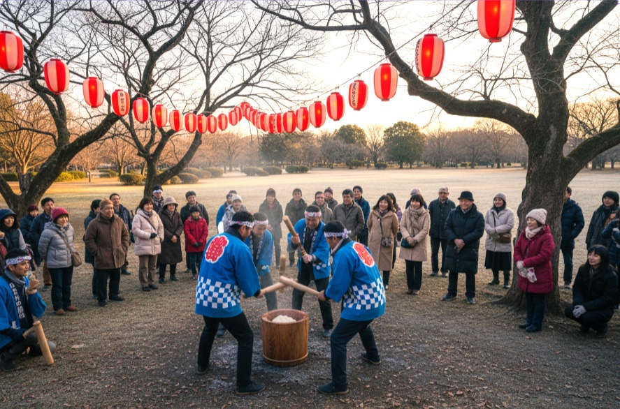
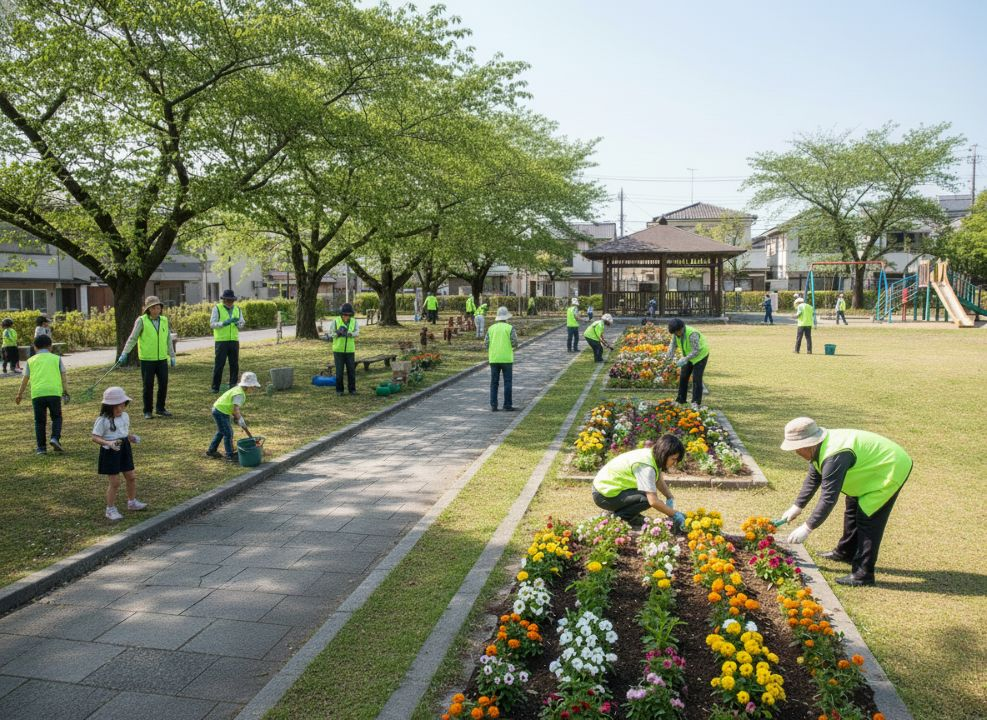
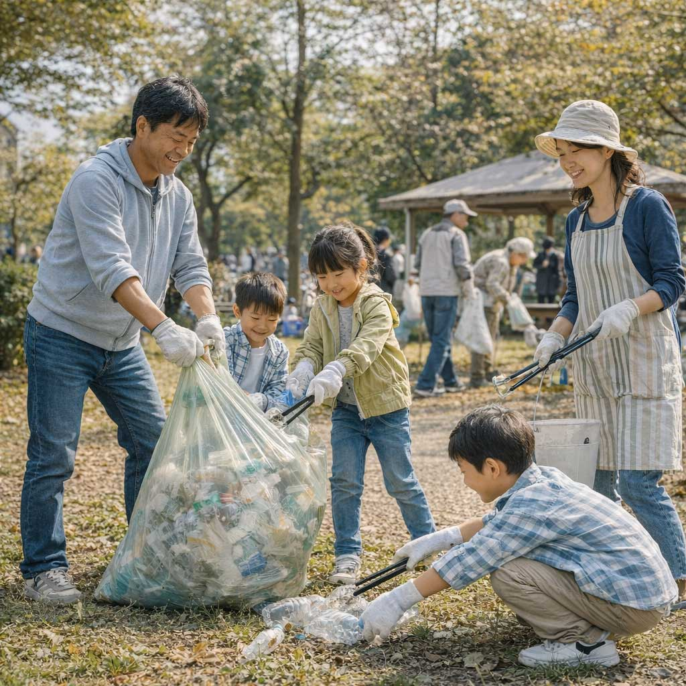
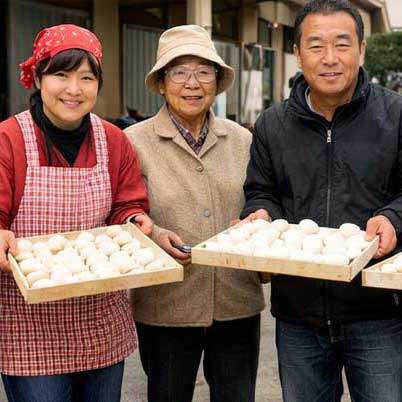
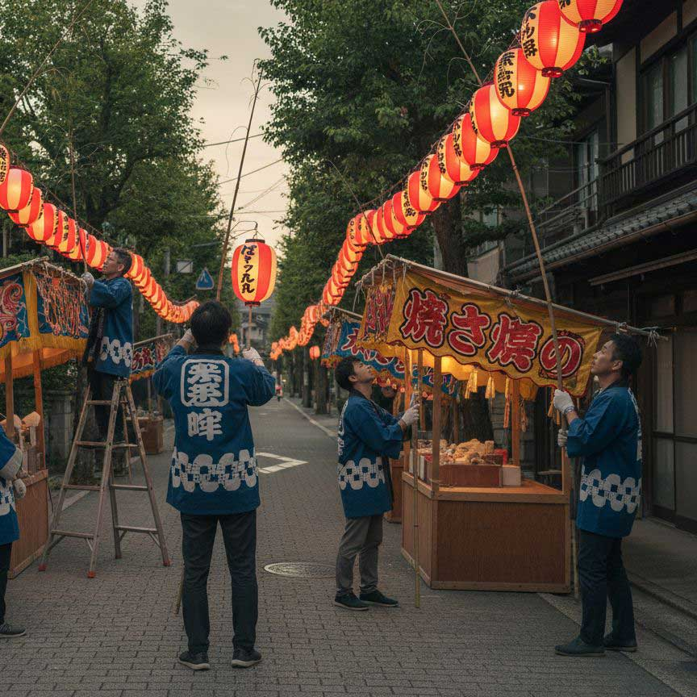

地域とつながり、安心して暮らせるまちづくり
地域交流イベントとして餅つき大会を開催します。
地域の皆さまと交流する夏祭りを開催します。

地域美化活動として公園清掃を行います。
朝日町町内会では、季節ごとのイベントや地域活動を通じて、 人と人とのつながりを大切にしています。


地域の皆さまと共に活動している様子です。 四季を通じてさまざまなイベントを開催しています。
Google マップで見る